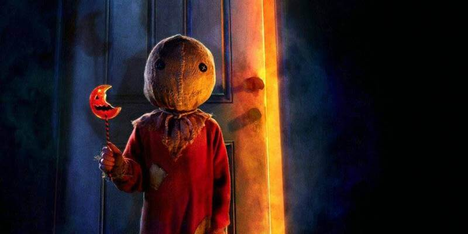

About Movie
During Halloween in a town called Warren Valley; Five interwoven stories are played out. A high school principal with a deadly secret; A college girl 'faithfully' meeting the guy for her; A group of teenagers prank gone wrong; A wife who detest the night meets a grizzly encounter; And finally, a grouchy old man meets his match. The story is told in a nonlinear narrative. At the center of the story is Sam, an eerie trick-or-treater dressed in pajamas and a burlap sack, who appears to enforce the "rules" of Halloween.